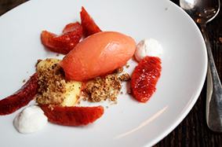

Aujourd'hui ni lustres, ni flonflons mais un chef brillant.
On le voit partout, dans les magasines, le petit génie des cuisines, qui a su trouver la recette magique pour enchanter le palais.
Bienvenue dans ce palais, ce Taj Mahal du goût, où l'on ne laisse la place qu'au plaisir des sens.
Vous allez vivre le Kâmasûtra des papilles !
Car oui, on perçoit, derrière la maîtrise des associations de saveurs pétillantes et surprenantes,
l'amour sincère, fidèle mais parfois dévergondé pour les bons produits. Attention plantage de décor.
Sobre et efficace, brut et délicat, design et désuet !
Un bon mélange, un beau manège qui conduit les yeux à circuler harmonieusement de la salle à l'assiette, sans rupture, tout en douceur, du chaud au froid, des prémices au dessert.
On glisse métaboliquement dans la liesse.Mais qu'est ce qu'on mange ? me direz-vous pour mettre fin à mes digressions métaphoriques.
Le tout fût arrosé par un vin discret, comme une présence amicale et bienveillante. Son histoire nous a été comptée avec une telle passion qu'elle diffuse sa vibration tout le long du repas en perfusion.
Le "conteur", ainsi que ses partenaires de jeu offrent une prestation juste et discrète. Pas de mise en scène pompeuse, que de l'improvisation sincère qui laisse l'impression d'avoir vécu un "spectacle vivant" chaleureux et vrai. Applaudissements.
Un lieu à la mode, bientôt décadent ?
La décadence est dans les prix: menu à 26 euros le midi avec entrée, plat, dessert.
De quoi en faire votre future cantine? Le soir comptez plutôt 40 à 50 euros pour y dîner et surtout pensez à réserver car le succès aidant...
Réservez par internet, beaucoup plus simple, car impossible de les avoir au téléphone...
Le Septime
80 rue Charonne Paris 11
métro Charonne
tel: 01 43 67 38 29
fermé samedi dimanche et lundi midi